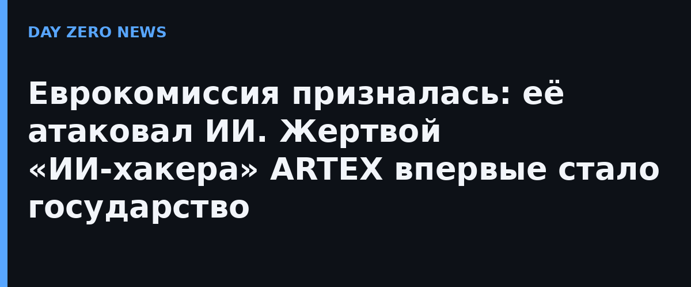

19 ноября официальный представитель комиссии Томас Ренье на регулярном брифинге подтвердил: ведомство отразило «киберкампанию». Вторжение обнаружили 22 октября, а 26 октября оно было официально классифицировано как кибератака. В качестве защитной меры комиссия временно сняла с работы несколько внутренних приложений — большинство уже вернули в строй. Среди затронутых систем Politico называл платформу кадров Sysper (расчётные листки и учёт рабочего времени сотрудников ЕС) и систему компенсации медицинских расходов.
Ренье отдельно подтвердил ключевое: атака была «сгенерирована ИИ» с применением «общедоступного» инструмента. «ИИ-инструменты можно и нужно использовать — и особенно злоупотреблять ими для поиска уязвимостей. Мы можем подтвердить, что в этой атаке применялись ИИ-инструменты», — заявил он. При этом доказательств утечки данных сотрудников следствие пока не нашло; требований выкупа комиссии не поступало. Инцидент поставлен на надзор: уведомлён Европейский контролёр по защите данных (EDPS), расследование ведётся вместе с CERT-EU.
Politico со ссылкой на источники написал, что атаку вели через ARTEX — китайский open-source фреймворк автономного пентеста с веб-консолью и связкой из ИИ-агентов, которых можно подключать к любым большим языковым моделям. Это совпадает с нашей хроникой: в октябре мы рассказывали, как ARTEX с моделями Claude и DeepSeek атаковал южнокорейские банки, затем — японские компании, а 13 ноября ФБР выпустило экстренное предупреждение (Flash) о массовом злоупотреблении ARTEX злоумышленниками по всему миру. CERT-EU предупреждал о том же ещё 5 ноября. Теперь к списку жертв — раньше это были банки и корпорации — впервые официально добавлено государство.
Эксперты называют причину системно: ИИ ускоряет подготовку взлома до «скорости намерения», как сформулировал старший стратег ISACA Крис Димитриадис. Пока организации не начнут применять ИИ в защите так же агрессивно, как преступники применяют его в атаке, разрыв будет расти — эту мысль повторяют и рекомендации ФБР, и предупреждения европейских структур.
Показательна не столько сама атака (данных сотрудников, по текущим данным, не украли), сколько признание: ИИ-агентный взлом перестал быть гипотезой из презентаций стартапов по безопасности и стал официальным инцидентом правительственного уровня, о котором отрапортовали на брифинге. Если ИИ-пентестер прошёл периметр комиссии ЕС — типовой корпоративный периметр с тем же устаревшим CVE в VPN-шлюзе он берёт уверенно. Практический вывод простой: инвентаризация и патчи важнее модных средств защиты, а агентные пентесты стоит запускать самим — раньше, чем это сделают за вас.
Официальное признание — брифинг Еврокомиссии 19.11.2026 (запись и стенограмма доступны на официальном audiovisual-портале ЕК). Отдельного анонса «компании-разработчика» у этой новости нет: атакованная сторона — публичное учреждение, а сторону атакующего инструмента описывают ФБР и CERT-EU в открытых предупреждениях.